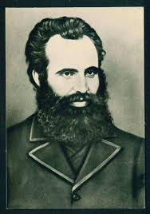

Паисий Хилендарски (1722 – 1773)
- Дело: Автор на „История славянобългарска“ (1762), която поставя началото на Българското възраждане.
- Роля: Призовава българите да се гордеят със своята история и да не се срамуват, че са българи.
- Значение: Събужда националното самосъзнание на българите.

Софроний Врачански (1739 – 1813)
- Истинско име: Стойко Владиславов
- Дело: Продължител на делото на Паисий, издава „Неделник“ – първата печатна българска книга с религиозно-нравствено съдържание.
- Роля: Първият български възрожденски писател. Работи за духовното пробуждане на народа.

Васил Левски (1837 – 1873)
- Истинско име: Васил Иванов Кунчев
- Прякор: Апостолът на свободата
- Дело: Организира Вътрешната революционна организация (ВРО) и изгражда комитети из цяла България.
- Цел: Освобождение на България чрез всенародно въстание.
- Значение: Символ на саможертвата, свободата и демократичните идеали.

Христо Ботев (1848 – 1876)
- Дело: Поет, публицист и революционер. Издава вестници („Знаме“, „Нова България“) и пише силно патриотични стихове.
- Произведения: „Хаджи Димитър“, „На прощаване“, „Моята молитва“
- Роля: Загива като войвода в борбата за свободата на България през 1876 г.

Любен Каравелов (1834 – 1879)
- Дело: Журналист, писател, революционер. Работи съвместно с Левски.
- Издания: „Свобода“, „Независимост“
- Роля: Един от ръководителите на Българския революционен централен комитет (БРЦК).
- Произведения: „Българи от старо време“ – класически възрожденски разказ.

Неофит Рилски (1793 – 1881)
- Истинско име: Никола Поп Петров Бенин
- Дело: Създател на първата българска граматика (1835) – „Болгарска граматика“
- Роля: Учител, книжовник и преводач. Работи за създаването на светско образование.
- Значение: Считан за „патриарх на новобългарското образование“.

Георги Раковски (1821 – 1867)
- Истинско име: Саби Стойков Попович
- Дело: Създава Първата българска легия в Белград и планове за освобождение чрез въоръжена борба.
- Роля: Писател, публицист, идеолог на националната революция.
- Произведения: „Горски пътник“ – революционно-патриотично стихотворение.
- Значение: Подготвя почвата за Левски и Ботев.

Петко Р. Славейков (1827 – 1895)
- Дело: Поет, писател, публицист, преводач, политик. Работи за просветата и църковната независимост.
- Произведения: „Изворът на Белоногата“, „Гусла и песен“
- Роля: Съставя първите учебници и речници на новобългарски език.
- Значение: Един от „строителите на съвременна България“.

Добри Чинтулов (1822 – 1886)
- Дело: Поет и учител, автор на възрожденски и патриотични песни.
- Произведения: „Стани, стани, юнак балкански“, „Вятър ечи, Балкан стене“
- Роля: Стиховете му са възпявани от въстаници и ученици, вдъхновяващи за борба.
- Значение: Един от най-емоционалните гласове на възраждането.

Иван Вазов (1850 – 1921)
- Дело: Писател, поет, драматург – „патриархът на българската литература“
- Произведения: „Под игото“, „Епопея на забравените“, „Чичовци“
- Роля: Свързва възрожденската епоха с новата свободна България.
- Значение: Увековечава подвига на възрожденците и революционерите.